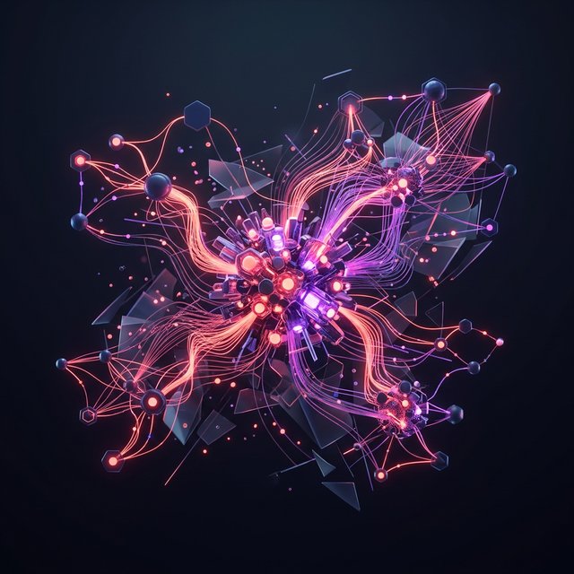

Hola, soy
Simon Rinaudo
Experto en Agentes de IA y n8n
Transformo operaciones empresariales diseñando ecosistemas autónomos. Conecto modelos de lenguaje con cualquier API externa usando el poder de n8n para crear flujos de trabajo inteligentes, eficientes y escalables.

Mi Especialidad
Desarrollo de Agentes
Creación de agentes de IA autónomos con capacidades de razonamiento, uso de herramientas y toma de decisiones para resolver problemas complejos de negocio.
Orquestación con n8n
Diseño de flujos de trabajo visuales, robustos orientados a la máxima eficiencia. Integración de diversas plataformas sin fricciones.
Integraciones API
Conexión fluida entre arquitecturas legadas y herramientas modernas (OpenAI, Anthropic, CRMs, ERPs). Arquitecturas de datos seguras.
Optimización de Procesos
Auditoría de cargas de trabajo actuales y reducción de tiempos manuales mediante la implementación de delegación a IA.
¿Listo para integrar Inteligencia Artificial en tu empresa?
Agenda una consulta gratuita de 30 minutos para descubrir cómo los Agentes IA pueden optimizar tus operaciones diarias.
Agendar Llamada